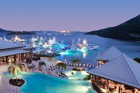

Traveling to the Virgin Islands!
Use this travel guide to find out all you need to know about travel in the Virgin Isalnds! There are many different ways to stay and visit the Islands and we cover them all here to make your travels smooth and easy!

Flights
Prices vary depending on where you're traveling from of cource.
Click here to look at flight cost from your location!
Resorts and Hotels
There are many different Resorts and Hotels available to stay at while spending time in the Dominican republic. Some of the highly rated resorts are
- Iberostar Grand Bavaro - 4.9 - $570 a night.
- Excellence Punta Cana - 4.8 - $439 a night.
- Excellence El Carmen - 4.9 - $537 a night.
- Secrets Cap Cana Resort and Spa - 4.7 - $483 a night.